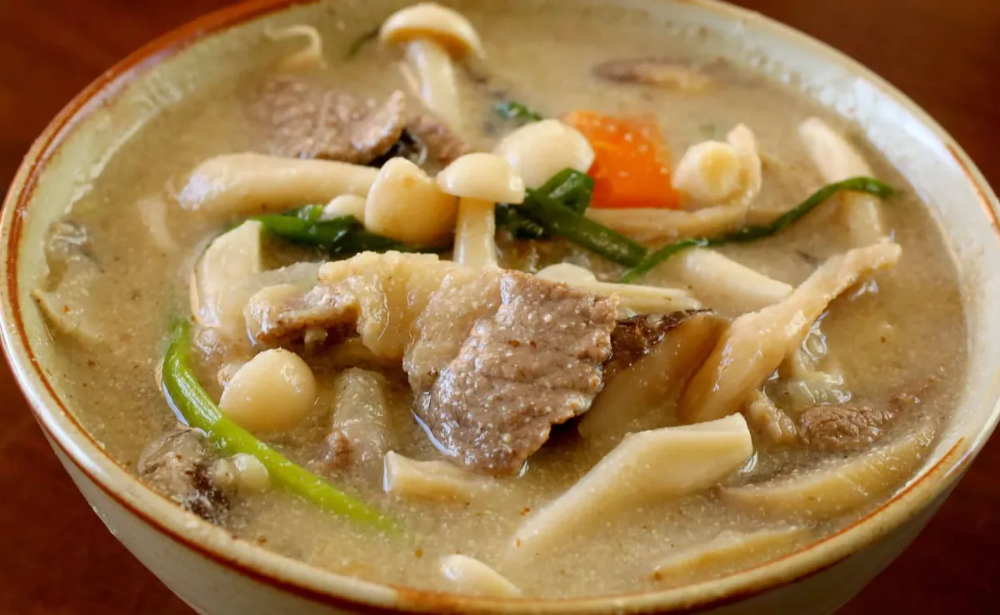
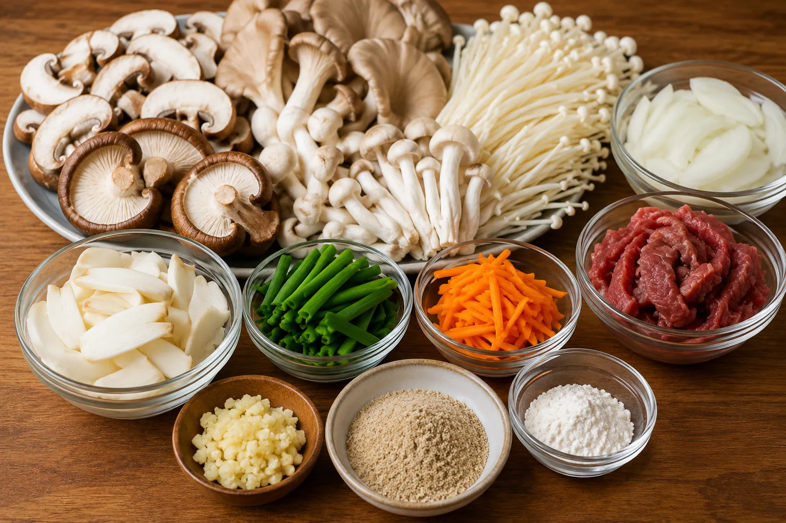
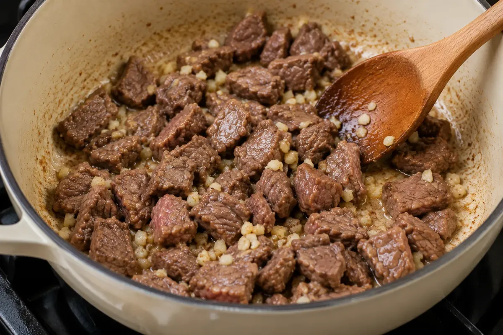
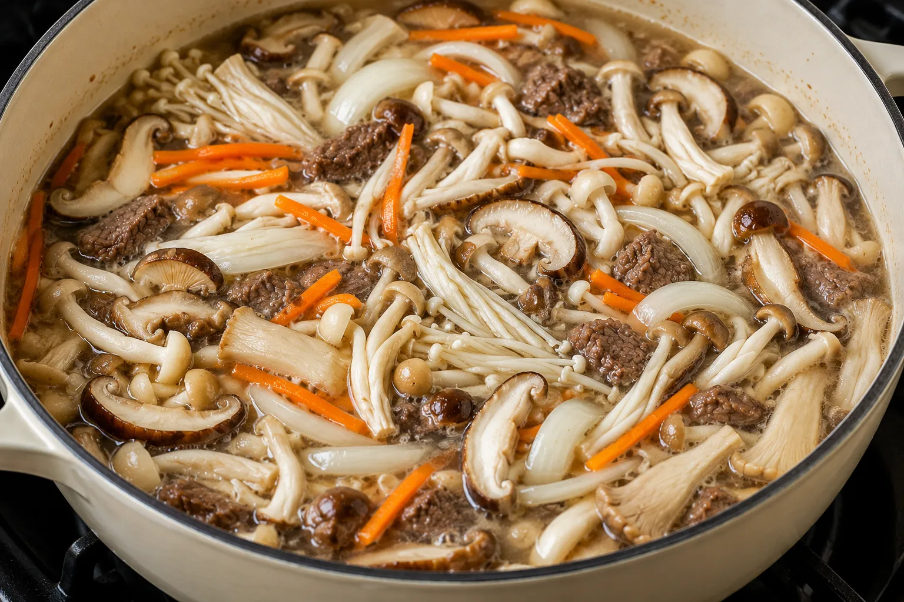

Korean Mushroom Soup (Beoseot-Deulkkae-Tang)
A Warm and Comforting Soup Packed with Umami and Nutrition

Korean Mushroom Soup, also known as Beoseot-Deulkkae-Tang (버섯들깨탕), is a wholesome and comforting dish filled with earthy mushroom flavors and a creamy, nutty broth.Made with a variety of mushrooms and rich perilla seed powder, this soup is both nutritious and deeply satisfying.
The combination of mushrooms creates a wonderful mix of textures — soft, juicy, slightly chewy, and delicate — while the perilla seeds give the broth its signature smooth and nutty taste. Traditionally, some versions include beef for added richness, but it is completely optional, making this recipe easy to adapt for vegetarian or vegan preferences as well.
Whether enjoyed as a light dinner or a cozy comfort meal, this Korean-style soup is simple, flavorful, and perfect for any season.
Ingredients
Main Ingredients
- 1 pound assorted mushrooms, cleaned and cut into bite-sized pieces (shiitake, oyster, white beech, white button, or enoki mushrooms work well)
- 8 ounces beef brisket or sirloin steak, thinly sliced (optional)
- 2 teaspoons toasted sesame oil
- 1 medium onion, sliced
- 4 garlic cloves, minced
- Asian chives or green onions
- A few thin carrot strips (optional)
Broth & Seasoning
- ½ cup perilla seed powder
- 1 tablespoon glutinous rice flour
- 1 tablespoon fish sauce
- 1 teaspoon kosher salt
- 4 cups water or vegetable stock
Step-by-Step Recipe
Step 1: Prepare the Perilla Mixture
In a small bowl, mix together the perilla seed powder, glutinous rice flour, and ½ cup of water until smooth.

Step 2: Sauté the Base Ingredients
Heat a heavy-bottomed pot over medium heat and add the toasted sesame oil. If using beef, add it along with the minced garlic and cook for 2-3 minutes until lightly browned.

Step 3: Add the Mushrooms and Vegetables
Pour in 4 cups of water or vegetable stock. Add the mushrooms, sliced onion, and carrot strips. Cover the pot and let the soup simmer over medium-high heat for about 15 minutes so the mushrooms release their rich flavor into the broth.

Step 4: Let the Flavors Develop
Stir gently and continue cooking for another 15 minutes.
Step 5: Create the Creamy Broth
Add the fish sauce (or soy sauce) and salt. Slowly stir in the prepared perilla mixture. The broth will gradually become creamy and slightly thick with a soft nutty aroma. Let it simmer for another minute.

Step 6: Finish with Fresh Chives
Add the Asian chives or green onions and stir gently until slightly softened while still fresh and vibrant.
Step 7: Serve and Enjoy
Serve hot with steamed rice for a nourishing meal.